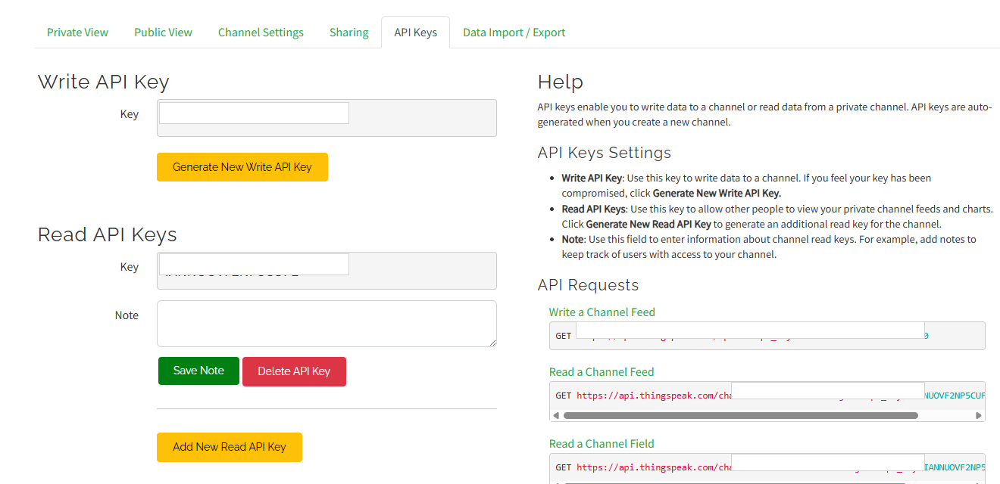
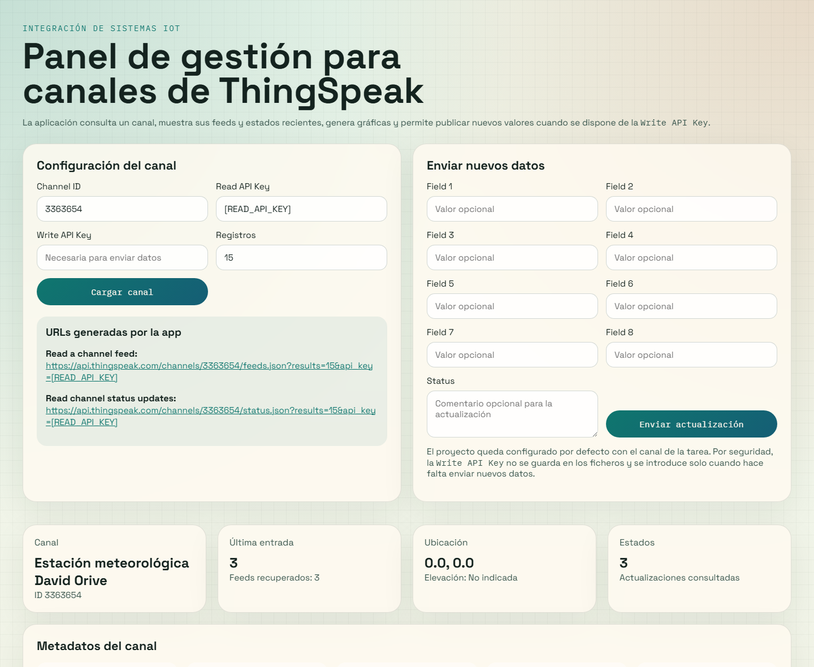
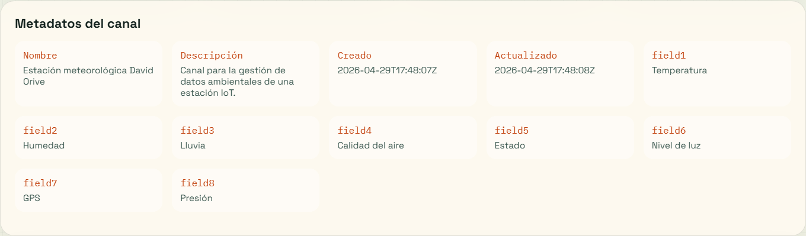
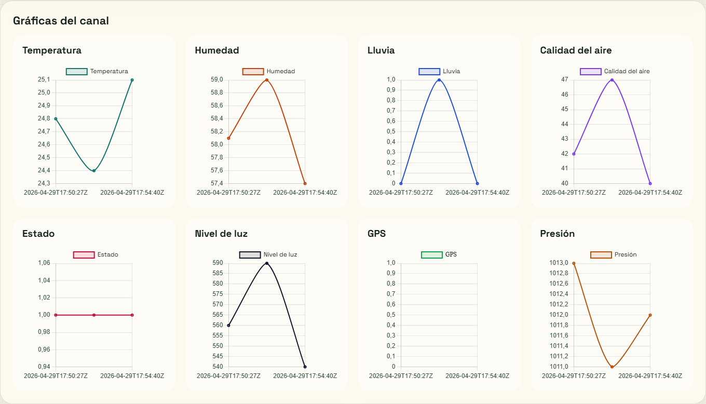
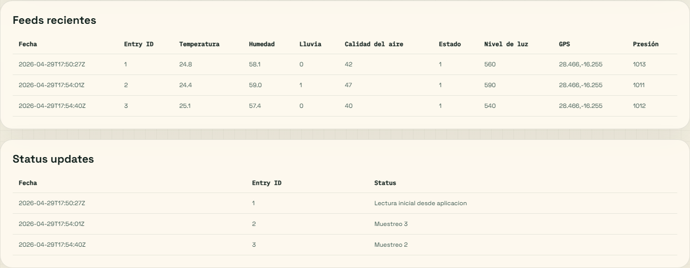

Memoria técnica de la aplicación desarrollada para crear, consultar, visualizar y gestionar datos de un canal IoT mediante la API REST de ThingSpeak.
El objetivo de la práctica es utilizar la plataforma ThingSpeak para gestionar los datos de un sistema IoT. Para ello se ha creado un canal propio en la cuenta del alumno, se han definido ocho campos relacionados con una estación meteorológica y se ha desarrollado una aplicación web en Python que consume la API REST del servicio para leer feeds, consultar estados, representar gráficas y permitir el envío de nuevos datos al canal.
El flujo completo de la práctica ha quedado cubierto: creación real del canal, obtención de las claves de acceso, inserción de lecturas de prueba mediante API y comprobación de la aplicación local conectada al canal creado específicamente para esta tarea.
| Elemento | Valor configurado |
|---|---|
| Nombre del canal | Estacion meteorologica David Orive |
| Channel ID | 3363654 |
| Author | mwa0000041264990 |
| Access | Private |
| Field 1 | Temperatura |
| Field 2 | Humedad |
| Field 3 | Lluvia |
| Field 4 | Calidad del aire |
| Field 5 | Estado |
| Field 6 | Nivel de luz |
| Field 7 | GPS |
| Field 8 | Presion |

Una vez creado el canal, la gestión de los datos se ha realizado a través de la API REST de ThingSpeak. La escritura se probó con la Write API Key real del canal, aunque por seguridad no se incluye dicha clave en esta memoria. Sí se muestran las rutas de lectura requeridas por el enunciado, ya que son las que utiliza la aplicación para consultar los datos del canal privado.
| Operación | Dirección utilizada |
|---|---|
| Read a channel feed | https://api.thingspeak.com/channels/3363654/feeds.json?api_key=[READ_API_KEY]&results=15 |
| Read a channel field | https://api.thingspeak.com/channels/3363654/fields/1.json?api_key=[READ_API_KEY]&results=15 |
| Read channel status updates | https://api.thingspeak.com/channels/3363654/status.json?api_key=[READ_API_KEY] |
Para verificar el funcionamiento de la escritura, se enviaron tres lecturas de ejemplo al canal. Los datos recibidos por ThingSpeak fueron los siguientes:
| Entry ID | Temperatura | Humedad | Lluvia | Calidad aire | Estado | Nivel luz | GPS | Presion | Status |
|---|---|---|---|---|---|---|---|---|---|
| 1 | 24.8 | 58.1 | 0 | 42 | 1 | 560 | 28.466,-16.255 | 1013 | Lectura inicial desde aplicacion |
| 2 | 24.4 | 59.0 | 1 | 47 | 1 | 590 | 28.466,-16.255 | 1011 | Muestreo 3 |
| 3 | 25.1 | 57.4 | 0 | 40 | 1 | 540 | 28.466,-16.255 | 1012 | Muestreo 2 |
La solución implementada consiste en una aplicación web ligera en Python con Flask. La aplicación permite:




Nota: la aplicación no guarda la Write API Key en los ficheros del proyecto. Para escribir nuevos datos puede introducirse manualmente en la interfaz o mediante una variable de entorno.
class ThingSpeakClient:
def build_feed_url(self, config: ChannelConfig) -> str:
params = [f"results={config.results}"]
if config.read_api_key:
params.append(f"api_key={config.read_api_key}")
return f"{BASE_API_URL}/channels/{config.channel_id}/feeds.json?{'&'.join(params)}"
def build_status_url(self, config: ChannelConfig) -> str:
params = [f"results={config.results}"]
if config.read_api_key:
params.append(f"api_key={config.read_api_key}")
return f"{BASE_API_URL}/channels/{config.channel_id}/status.json?{'&'.join(params)}"
def write_update(self, config: ChannelConfig, payload: dict[str, str]) -> str:
update_url = self.build_update_url(config, payload)
response = requests.get(update_url, timeout=self.timeout)
response.raise_for_status()
return response.text.strip()
@APP.post("/send")
def send_data() -> Any:
config = build_config_from_request()
payload = {}
for index in range(1, 9):
value = request.form.get(f"field{index}", "").strip()
if value:
payload[f"field{index}"] = value
status = request.form.get("status", "").strip()
if status:
payload["status"] = status
entry_id = CLIENT.write_update(config, payload)
flash(f"Actualización enviada correctamente. ThingSpeak devolvió entry id {entry_id}.", "success")
def chart_payload(feeds: list[dict[str, Any]], labels: list[dict[str, str]]) -> list[dict[str, Any]]:
charts = []
timestamps = [feed["created_at"] for feed in feeds]
for label in labels:
series = []
for feed in feeds:
value = feed.get(label["key"])
try:
series.append(float(value) if value is not None else None)
except (TypeError, ValueError):
series.append(None)
charts.append({"field": label["key"], "label": label["label"], "labels": timestamps, "data": series})
return charts
Además de estos fragmentos, se entregan en el proyecto los ficheros completos app.py, thingspeak_client.py, templates/index.html, static/styles.css y las pruebas unitarias de tests/test_thingspeak_client.py.
La práctica ha quedado completada de forma íntegra sobre un canal real de ThingSpeak. Se ha creado y configurado el canal, se han definido sus campos, se han obtenido las direcciones de lectura, se han insertado lecturas de prueba y se ha comprobado una aplicación propia capaz de gestionar sus datos. De esta forma se demuestra tanto el uso de la plataforma ThingSpeak como la integración de una aplicación externa que automatiza la consulta y visualización de la información del sistema IoT.